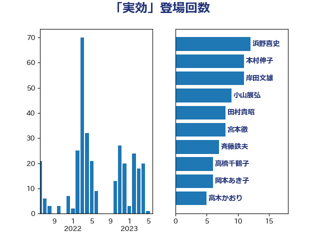

単語「実効」

| 浜野喜史 | 国民民主党 | 12 回 |
| 本村伸子 | 日本共産党 | 11 回 |
| 岸田文雄 | 自由民主党 | 11 回 |
| 小山展弘 | 立憲民主党 | 9 回 |
| 田村貴昭 | 日本共産党 | 8 回 |
| 宮本徹 | 日本共産党 | 8 回 |
| 斉藤鉄夫 | 公明党 | 7 回 |
| 高橋千鶴子 | 日本共産党 | 6 回 |
| 岡本あき子 | 立憲民主党 | 6 回 |
| 高木かおり | 日本維新の会 | 5 回 |
| 足立康史 | 日本維新の会 | 5 回 |
| 紙智子 | 日本共産党 | 5 回 |
| 秋葉賢也 | 自由民主党 | 5 回 |
| 和田政宗 | 自由民主党 | 5 回 |
| 西田昌司 | 自由民主党 | 4 回 |
| 西村康稔 | 自由民主党 | 4 回 |
| 緑川貴士 | 立憲民主党 | 4 回 |
| 浅田均 | 日本維新の会 | 4 回 |
| 沢田良 | 日本維新の会 | 4 回 |
| 山添拓 | 日本共産党 | 4 回 |
| 小池晃 | 日本共産党 | 4 回 |
| 金子恭之 | 自由民主党 | 3 回 |
| 浅野哲 | 国民民主党 | 3 回 |
| 松川るい | 自由民主党 | 3 回 |
| 後藤茂之 | 自由民主党 | 3 回 |
| 堀井巌 | 自由民主党 | 3 回 |
| 和田有一朗 | 日本維新の会 | 3 回 |
| 吉田統彦 | 立憲民主党 | 3 回 |
| 仁比聡平 | 日本共産党 | 3 回 |
| 馬場伸幸 | 日本維新の会 | 2 回 |
| 鈴木俊一 | 自由民主党 | 2 回 |
| 野田佳彦 | 立憲民主党 | 2 回 |
| 萩生田光一 | 自由民主党 | 2 回 |
| 芳賀道也 | 国民民主党 | 2 回 |
| 福田昭夫 | 立憲民主党 | 2 回 |
| 石井拓 | 自由民主党 | 2 回 |
| 田村智子 | 日本共産党 | 2 回 |
| 田名部匡代 | 立憲民主党 | 2 回 |
| 泉健太 | 立憲民主党 | 2 回 |
| 柴愼一 | 立憲民主党 | 2 回 |
| 柳ヶ瀬裕文 | 日本維新の会 | 2 回 |
| 枝野幸男 | 立憲民主党 | 2 回 |
| 松本剛明 | 自由民主党 | 2 回 |
| 杉尾秀哉 | 立憲民主党 | 2 回 |
| 打越さく良 | 立憲民主党 | 2 回 |
| 志位和夫 | 日本共産党 | 2 回 |
| 小沼巧 | 立憲民主党 | 2 回 |
| 大野敬太郎 | 自由民主党 | 2 回 |
| 吉良州司 | 無所属 | 2 回 |
| 吉田宣弘 | 公明党 | 2 回 |
| 古川禎久 | 自由民主党 | 2 回 |
| 務台俊介 | 自由民主党 | 2 回 |
| 倉林明子 | 日本共産党 | 2 回 |
| 高野光二郎 | 自由民主党 | 1 回 |
| 高良鉄美 | 無所属 | 1 回 |
| 階猛 | 立憲民主党 | 1 回 |
| 金子道仁 | 日本維新の会 | 1 回 |
| 野田聖子 | 自由民主党 | 1 回 |
| 野田国義 | 立憲民主党 | 1 回 |
| 谷公一 | 自由民主党 | 1 回 |
| 西岡秀子 | 国民民主党 | 1 回 |
| 蓮舫 | 立憲民主党 | 1 回 |
| 簗和生 | 自由民主党 | 1 回 |
| 竹詰仁 | 国民民主党 | 1 回 |
| 空本誠喜 | 日本維新の会 | 1 回 |
| 福重隆浩 | 公明党 | 1 回 |
| 神谷裕 | 立憲民主党 | 1 回 |
| 礒崎哲史 | 国民民主党 | 1 回 |
| 石橋通宏 | 立憲民主党 | 1 回 |
| 石井苗子 | 日本維新の会 | 1 回 |
| 田村憲久 | 自由民主党 | 1 回 |
| 田村まみ | 国民民主党 | 1 回 |
| 田所嘉徳 | 自由民主党 | 1 回 |
| 田中健 | 国民民主党 | 1 回 |
| 漆間譲司 | 日本維新の会 | 1 回 |
| 渡辺創 | 立憲民主党 | 1 回 |
| 津島淳 | 自由民主党 | 1 回 |
| 河野太郎 | 自由民主党 | 1 回 |
| 櫻井周 | 立憲民主党 | 1 回 |
| 榛葉賀津也 | 国民民主党 | 1 回 |
| 森本真治 | 立憲民主党 | 1 回 |
| 森山浩行 | 立憲民主党 | 1 回 |
| 林芳正 | 自由民主党 | 1 回 |
| 杉久武 | 公明党 | 1 回 |
| 星北斗 | 自由民主党 | 1 回 |
| 徳永エリ | 立憲民主党 | 1 回 |
| 岬麻紀 | 日本維新の会 | 1 回 |
| 岩田和親 | 自由民主党 | 1 回 |
| 山際大志郎 | 自由民主党 | 1 回 |
| 山田勝彦 | 立憲民主党 | 1 回 |
| 山口壯 | 自由民主党 | 1 回 |
| 小里泰弘 | 自由民主党 | 1 回 |
| 小川淳也 | 立憲民主党 | 1 回 |
| 寺田稔 | 自由民主党 | 1 回 |
| 宮口治子 | 立憲民主党 | 1 回 |
| 守島正 | 日本維新の会 | 1 回 |
| 奥野総一郎 | 立憲民主党 | 1 回 |
| 太田房江 | 自由民主党 | 1 回 |
| 大塚耕平 | 国民民主党 | 1 回 |
| 塩田博昭 | 公明党 | 1 回 |
| 吉田久美子 | 公明党 | 1 回 |
| 前原誠司 | 国民民主党 | 1 回 |
| 佐藤英道 | 公明党 | 1 回 |
| 伴野豊 | 立憲民主党 | 1 回 |
| 伊藤岳 | 日本共産党 | 1 回 |
| 伊波洋一 | 無所属 | 1 回 |
| 井上哲士 | 日本共産党 | 1 回 |
| 中野洋昌 | 公明党 | 1 回 |
| 中川正春 | 立憲民主党 | 1 回 |
| 中島克仁 | 立憲民主党 | 1 回 |
| たがや亮 | れいわ新選組 | 1 回 |